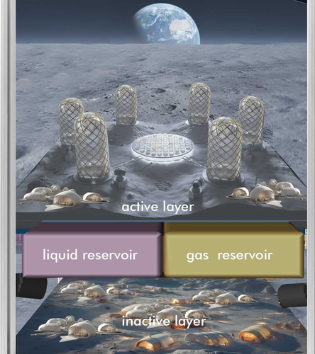
Human/Robotic Scientific Exploration of the Moon and Mars: Building Toward the Future with the Fungal Biocomposites
Blue Marble Space Institute of Science, 2026
Abstract presented at the 57th Lunar and Planetary Science Conference
A continuation of the Mycotecture effort: outlines how fungal biocomposites can support both robotic and human exploration of the Moon and Mars by growing structural and functional materials on site instead of shipping them from Earth.
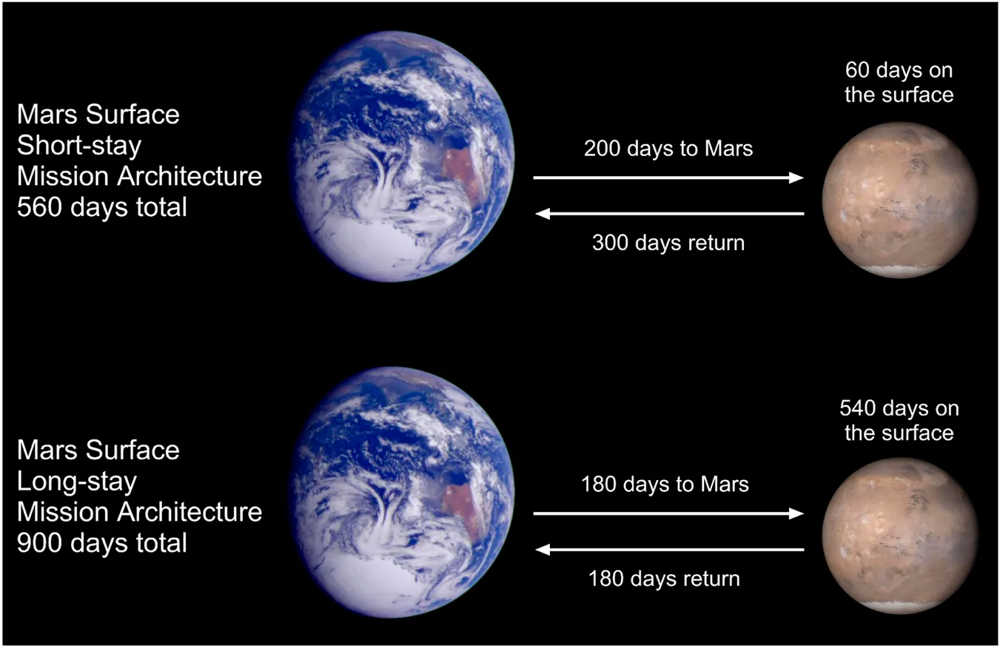
The database of peptide medications for human deep-space missions demonstrates the potential for on-demand Astropharmacy
Blue Marble Space Institute of Science, 2025
Orignal research published in Frontiers in Space Technology
Surveys of pharmaceuticals on the ISS reveal rapid drug degradation and uncertain potency in spaceflight conditions. These findings drive Astropharmacy efforts to produce stable biologic medicines on demand, ensuring reliable treatment during deep-space missions.
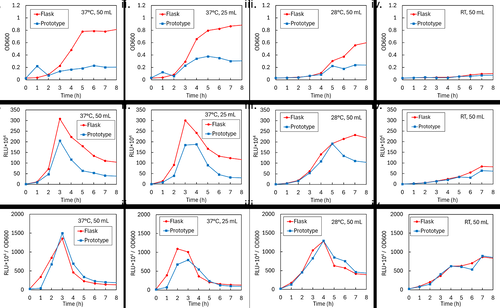
Astropharmacy: in-space pharmaceutical manufacturing for deep space missions
Blue Marble Space Institute of Science, 2025
Paper presented at the 76th International Astronautical Congress
Co-authored with the Astropharmacy team, laying out the case and design approach for manufacturing pharmaceuticals in space rather than carrying a limited, degrading supply from Earth.
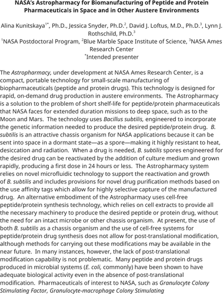
NASA's Astropharmacy for Biomanufacturing of Peptide and Protein Pharmaceuticals in Space and in Other Austere Environments
Blue Marble Space Institute of Science, 2025
Abstract presented at the TechConnect World Innovation Conference
An overview of the Astropharmacy's engineered Bacillus subtilis platform, stored as dormant spores and reactivated on demand to produce a first dose of a peptide or protein drug in under 24 hours.
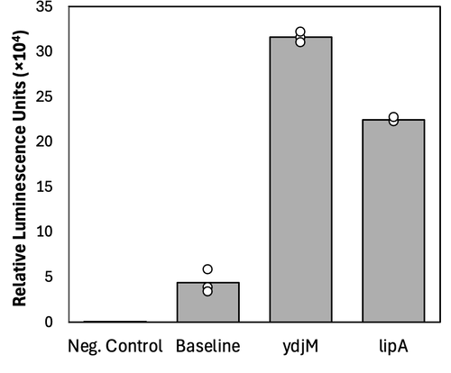
Pharmaceutical production in deep space using microbes
Blue Marble Space Institute of Science, 2024
NASA Postdoctoral Program poster
Poster detailing genetic engineering of Bacillus subtilis to produce, purify, and quantify a target drug on demand, a key step toward validating the Astropharmacy concept.
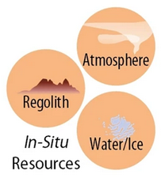
Microbial biomanufacturing for space exploration. What to take and When to make
Blue Marble Space Institute of Science, 2023
Perspective published in Natrue Communications
We define specific design-scenarios and quantify the usefulness of in-space biomanufacturing, to guide techno-economics of space-missions. Especially materials emerged as a potentially pivotal target for biomanufacturing with large impact on up-mass cost. Subsequently, we outline the processes needed for development, testing, and deployment of requisite technologies.
Global Map of Clinical Trials using MSCs
RoosterBio, 2022
Interactive map of NIH data and built using Python and JavaScript
A collaborative, global advanced therapeutics community has coordinated a long-term effort to translate mesenchymal stromal cell (MSC) research into safe and efficacious regenerative treatments. Explore this interactive map of over 1400 trials that enrolled more than 65k participants since 1995.
FDA Inspection Sites and CDC Health Statistics
RoosterBio 2022
We built this map to identify current and future locations for cell manufacturing. These facilities are our partners in capacity building to translate promising concepts into accessible treatments. Cell manufauring capacity rate-limits the commercialization of therapeutic breakthroughs.
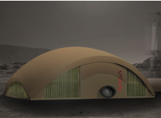
Mycotecture Off Planet: Fungi as A Building Material on The Moon and Mars
NASA Ames Research Center, 2021
Don't bring it with you, grow it there. Experiments explored fungal mycellium as a material space architecture. Is the material suited for acoustic tiling, furniture design, compostable consumables, or insullation? To answer these questions, mycellium was grown, formed into objects, and tested. This efforts aligns with many others to begin growing - as much as building - useful objects off-planet.
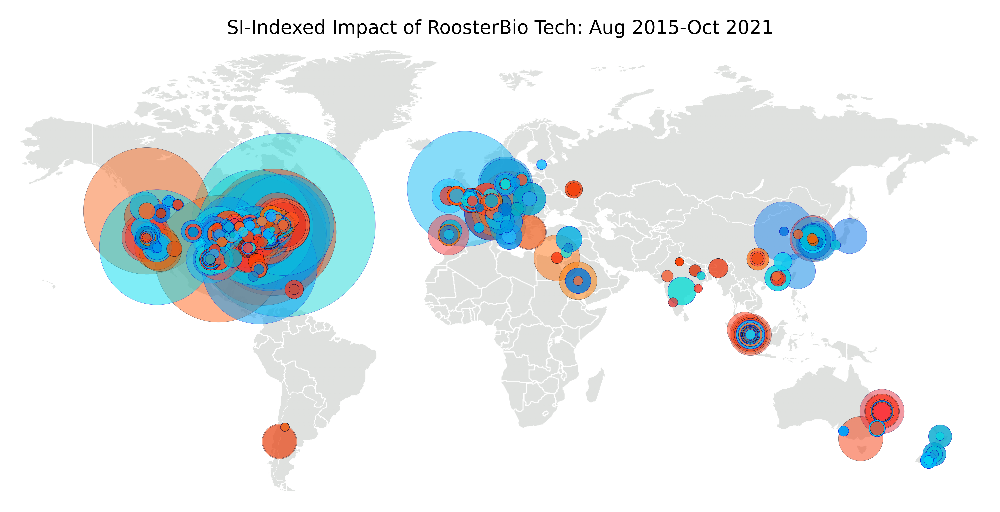
Pre-Peak Adopters of RoosterBio Tech
RoosterBio 2021
Visualization of scholarly article author affiliations built using Python
Who uses RoosterBio tech? Academics across the globe.
RoosterBio cells and media have a global footprint in the corpus of peer-reviewed literature. The map identifies author affiliations for 266 publications that cite RoosterBio technology with a cumulative 5700 citations.
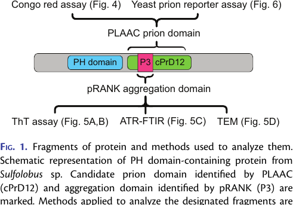
The Hunt for Ancient Prions: Archaeal Prion-Like Domains Form Amyloid-Based Epigenetic Elements
Blue Marble Space Institute of Science, 2021
article published in Molecular Biology and Evolution
Contributed to identifying prion-like domains in archaea from extreme environments, showing that amyloid-based inheritance may be an ancient, broadly conserved biological strategy relevant to how life survives environmental extremes.
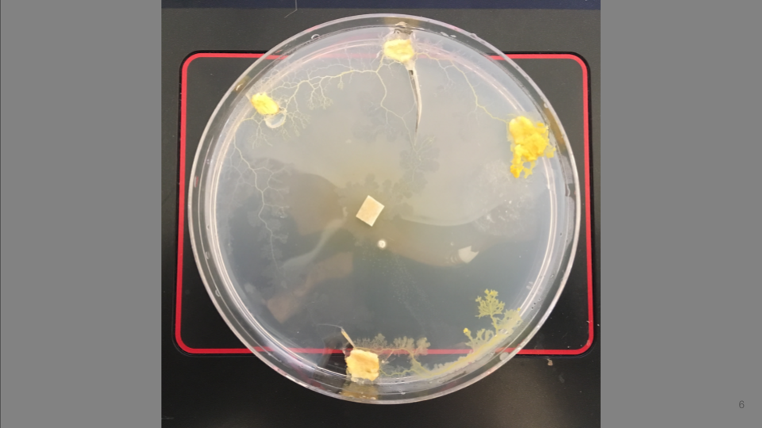
Slime Mold Computing
The Hawaii Space Exploration Analog and Simulation (HISEAS) 2020
Anatomy self-optimizes to build the shortest, most protected, path from available resources to more resources. What path with a slime mold take from a 3D printed model of volcano to food positioned along the base? We printed and grew to find out.
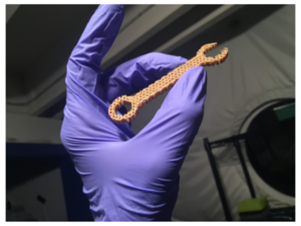
HISEAS Hardware
The Hawaii Space Exploration Analog and Simulation (HISEAS) 2020
During a simulated lunar mission, a team of six and a 3D printer produced a series hardware prototypes - wrench, gears, and more. Does flexible manufacturing enable innovation - even team building - during missions. It certainly can.
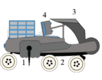
End-to-end mission design for microbial ISRU activities as preparation for a moon village
Blue Marble Space Institute of Science, 2019
article published in Acta Astronautica
In situ resource utilization (ISRU) increasingly features as an element of human long-term exploration and settlement missions to the lunar surface. In this study, all requirements to test a novel, biological approach for ISRU are validated, and an end-to-end mission architecture is proposed. The general mission consists of a lander with a fully autonomous bioreactor able to process lunar regolith and extract elemental iron.
Tidal Pools of Antarctica
Quixote Expeditions to South Shetlands, Antarctica, 2019
What can the ecosystems that survive the Antacrtic winters teach humanity about surviving a trip to Mars? I joined a crew sailing Antarctica's South Shetland Islands, microscope in hand, to see what lived in the tide pools of the high latitudes.
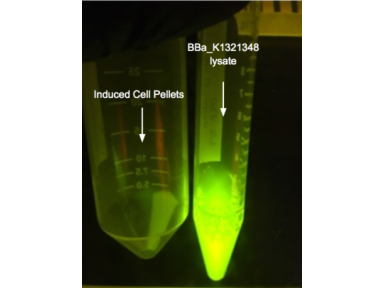
An Astropharmacy
NASA Ames Research Center 2019
Advisor to the Brown Stanford Princeton iGEM Team
Medications degrade over time--especially in space--and take up precious mass and volume. With the push towards long-term human missions to the Moon and Mars, and the recently announced Artemis space program. Our solution is to create an Astropharmacy, a system to synthesize peptide-based drugs on demand in cellular or cell-free expression systems. The Astropharmacy is divided into three stages: disease diagnosis, drug production, and drug purification.
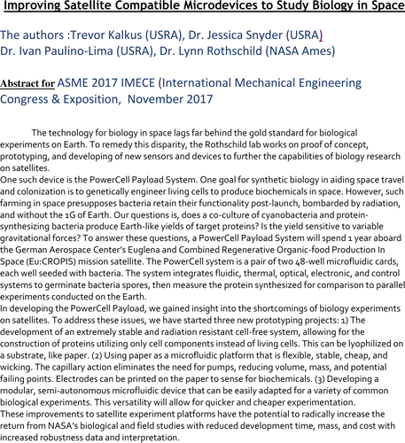
Improving Satellite Compatible Microdevices to Study Biology in Space
NASA Ames Research Center, 2017
Abstract presented at the ASME International Mechanical Engineering Congress & Exposition
Mentored this study of the PowerCell Payload System, testing whether a co-culture of cyanobacteria and protein-synthesizing bacteria can produce Earth-like protein yields after a year in orbit.
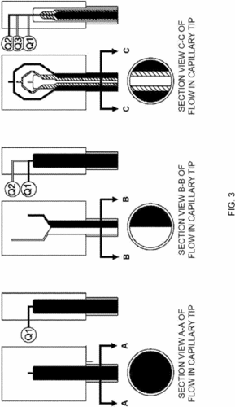
Heterogeneous Filaments, Methods of Producing the Same, Scaffolds, Methods of Producing the Same, Droplets, and Methods of Producing the Same
Drexel University, 2017
Patent WO/2017/019300
Patented a method for co-extruding multiple materials into a single filament, enabling 3D-printed scaffolds with locally tuned composition and porosity for tissue engineering.
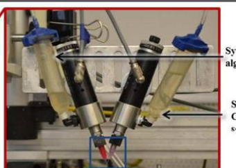
Evaluating fabrication feasibility and biomedical application potential of in situ 3D printing technology
Drexel University, 2016
article published in Rapid Prototyping Journal
Evaluated an in situ 3D bioprinting process, directly comparing printed alginate constructs to standard sample prep to test whether on-the-fly fabrication is viable for biomedical use.
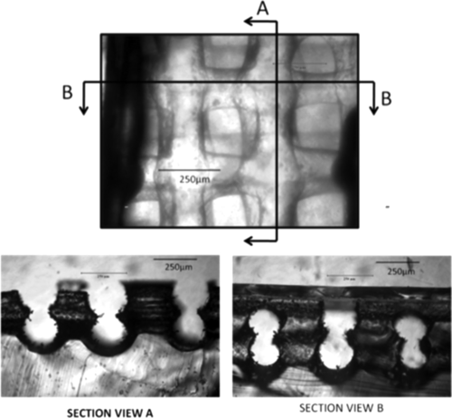
Fabrication of Microfluidic Manifold by Precision Extrusion Deposition and Replica Molding for Cell-Laden Device
Drexel University, 2016
article published in Journal of Manufacturing Science and Engineering
Combined precision extrusion deposition with replica molding to build a heterocellular microfluidic device, enabling direct printing of living cells into embedded and surface channel networks.
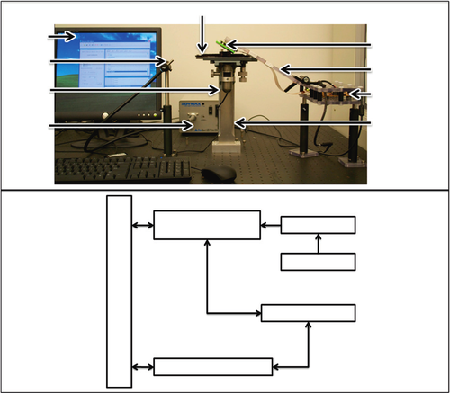
A Digital Microfabrication-Based System for the Fabrication of Cancerous Tissue Models
Drexel University, 2013
book chapter
Contributed to a digital micro-mirroring microfabrication system used to build cancerous tissue models, combining multi-nozzle biologics deposition with photolithographic patterning.
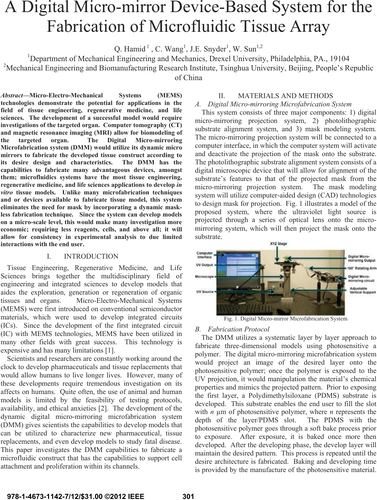
A Digital Micro-Mirror Device-Based System for the Fabrication of Microfluidic Tissue Array
Drexel University, 2012
conference paper
Contributed to a digital micromirroring microfabrication system that patterns microfluidic tissue arrays directly from CT and MRI-derived organ models.
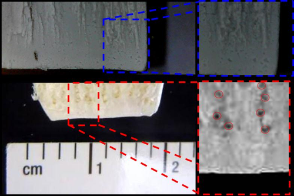
Combined multi-nozzle deposition and freeze casting process to superimpose two porous networks for hierarchical three-dimensional microenvironment
Drexel University, 2012
article published in Biofabrication
Superimposed two independently controlled pore networks, one printed and one freeze-cast, to build ceramic scaffolds with the multi-scale porosity needed to direct cell proliferation and migration.
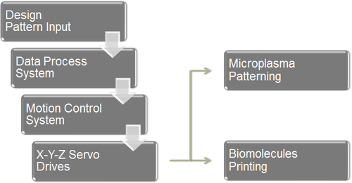
A Novel Automation System for Microplasma Surface Patterning and Biologics Printing
Drexel University, 2012
conference paper
Contributed to an automation system pairing atmospheric microplasma surface patterning with biologics printing, giving printed scaffolds the biochemical surface cues native tissue relies on for cell attachment.
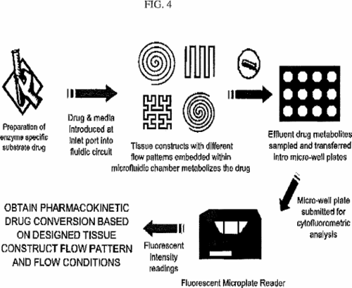
Compositions and Methods for Functionalized Patterning of Tissue Engineering Substrates Including Bioprinting Cell-Laden Constructs for Multicompartment Tissue Chambers
Drexel University, 2011
U.S. Patent Application US 2011/0136162
Patented a microfluidic system and method for monitoring drug conversion across multicompartment, cell-laden tissue constructs under controlled flow conditions.
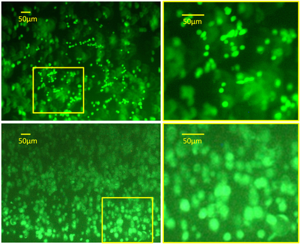
Bioprinting cell-laden matrigel for radioprotection study of liver by pro-drug conversion in a dual-tissue microfluidic chip
Drexel University, 2011
article published in Biofabrication
Bioprinted a dual-tissue microfluidic chip to study whether liver tissue can shield adjacent tissue from radiation damage by converting a pro-drug, work that grew out of a collaboration with NASA Johnson Space Center on space flight medicine.
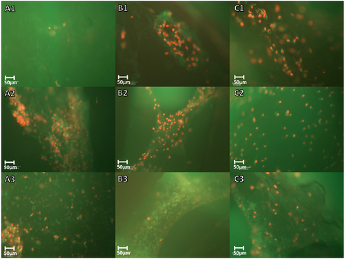
Fabrication of three-dimensional scaffolds using precision extrusion deposition with an assisted cooling device
Drexel University, 2011
article published in Biofabrication
Contributed to an assisted-cooling precision extrusion deposition system that improves resolution and structural fidelity when 3D printing polymer scaffolds.
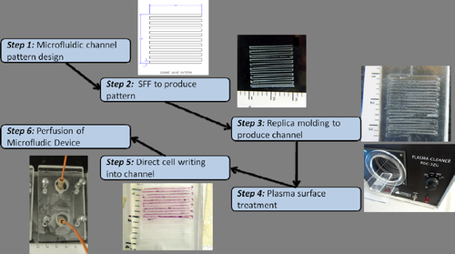
Combined SFF Patterning and Replica Molding for Microfabrication of Cell-Laden Microfluidic Device
Drexel University, 2011
SFF Symposium abstract
Introduced a two-stage process, printing a negative mold by precision extrusion deposition and casting it in PDMS, to fabricate cell-laden microfluidic devices with 3D channel architecture.
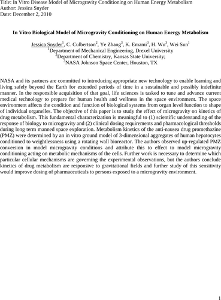
In Vitro Biological Model of Microgravity Conditioning on Human Energy Metabolism
Drexel University / NASA Johnson Space Center, 2010
NSBRI Symposium abstract
Studied how microgravity affects the kinetics of drug metabolism, early work toward understanding how biological systems respond to spaceflight down to the level of individual organelles.